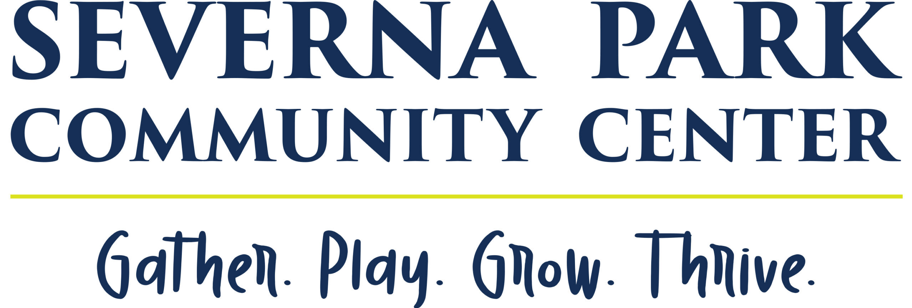

(Benfield + Jumper's Hole Rds, near Szechuan Inn)
The blankets come in many styles; quilt, tied comforters, crochet, knit, edged fleece, no-sew fleece, etc. No matter your skill level – there is a blanket style that you will enjoy! Do you want to learn a new technique? Our monthly meetings often focus on learning new skills and many of the ‘blanketeers’ are willing to provide one-on-one help. We also have a collection of patterns and tutorials here.
Project Linus is a rewarding and fun service organization that brings together people of all ages who want to help children who are seriously ill, traumatized or otherwise in need.
Project Linus works with local businesses and service clubs (Girl Scouts, schools, church groups, etc.) to assist them in reaching public service goals. Contact the Chapter Coordinator before you undertake your project.
Come to every meeting or work from your home/office. Project Linus makes participation easy and fun!
Project Linus accepts donations of new, handmade blankets in sizes 32″ x 32″ and larger. Blankets must be made of machine-washable materials and be in bright child-friendly colors and prints. We have a collection of patterns and tutorials you may find helpful.
If you would like to donate blanket-making materials (cotton fabrics & machine-washable yarn) please contact the chapter coordinator first.
Contact information can be found here
Should you wish to make a cash donation to Project Linus, please visit https://www.projectlinus.org.
Project Linus is a 501(c)(3) non-profit organization. Donations are tax deductible in accordance within IRS guidelines.
Do you have finished blankets to donate?
You may drop them at any of these locations or bring to a monthly meeting. Please mark all bags with “Project Linus".
|  | |
|
| 623 Baltimore/Annapolis. Blvd. | 150 Jennifer Rd. | 548 Benfield Road |
| Severna Park, MD | Annapolis Plaza | Benfield Village Shopping Center (Benfield + Jumper's Hole Rds, near Szechuan Inn) |
| (410) 647-5843 | Annapolis, MD | Severna Park, MD |
| (410) 266-8674 | (443) 288-0884 |